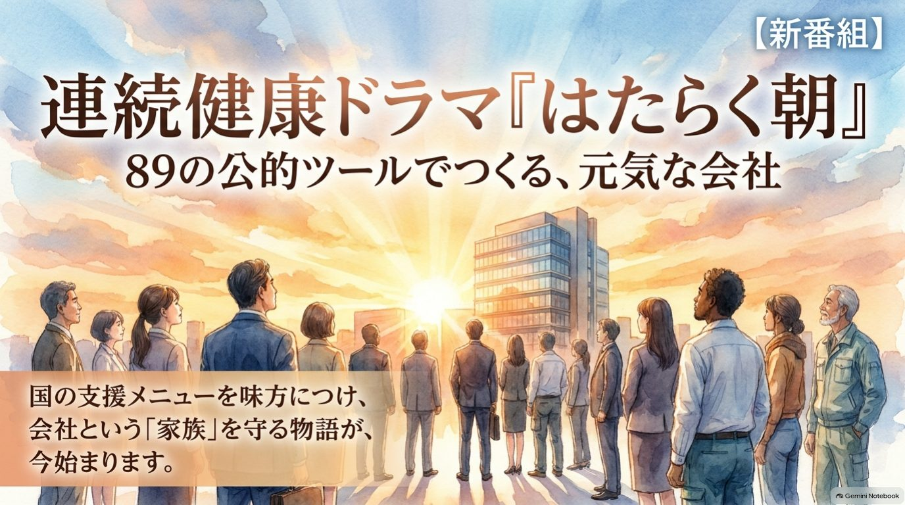
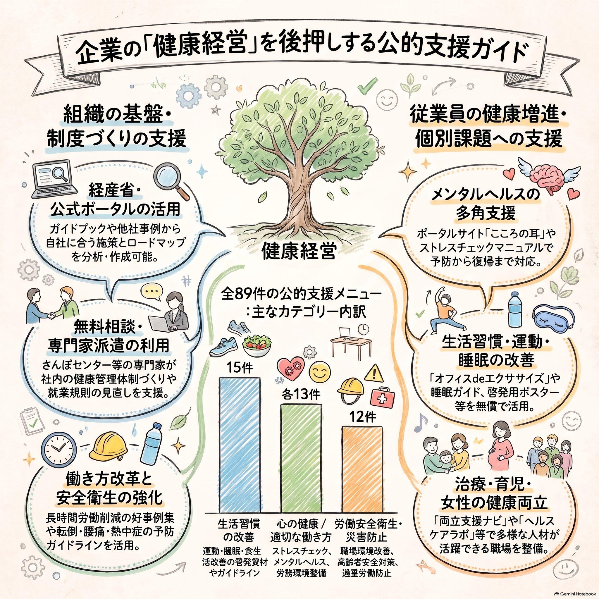

第1話
土台をつくる者たち
健康経営を進めて、皆が笑顔で働ける会社にしたい。そう思っていても、日々の業務に追われて手が回らないのが現実です。
メンタル不調や体調不良で、ある日突然、戦力が欠けてしまう。
時間をかけて育てた人材が、数年で職場を離れていく。
国のガイドラインや膨大なPDF資料が積み上がり、読む時間がない。
その悩みに応えるツールの多くを、国や公的機関がすでに用意しています。
音が出ます。再生ボタンを押してご覧ください。
単なる行政文書ではなく、会社の悩みに寄り添い、解決まで伴走してくれる味方です。分野ごとに見ると、自社に必要なものが探しやすくなります。
全89件のうち件数の多い分野。運動・睡眠・食生活、ストレスチェック、職場環境改善や高齢者の安全対策などが含まれます。
土台づくりから、毎日の健康習慣、心のケア、ライフイベント、働き方、見えない脅威への備えまで。各話のスライドは下の資料ビューアでも読めます。
第1話
土台をつくる者たち
第2話
健やかなる日々へ
運動・食事・禁煙への自発的な行動変容を促す国民運動。ポスターで社内の意識づけに。
公式サイト ↗椅子に座ったままできるストレッチで、肩こり・腰痛を早めにケア。運動習慣の定着に。
昼休みの「15分の仮眠」の効果と、寝起きのだるさ（睡眠慣性）を防ぐセルフケア。
疲労の蓄積を防ぎ、生産性を保つための睡眠マネジメント。
第3話
心に寄り添う耳
働く人の心の健康づくりのポータル。セルフチェックと管理職向けラインケアの拠点。
公式サイト ↗担当者が実務で迷ったときに、無料で頼れる専門の電話相談窓口。
不調者対応にとどまらず、職場の強みを活かして従業員のエンゲージメントを高める5つのステップ。
第4話
変化とともに生きる
第5話
あたらしい朝の形
第6話
見えない脅威から守る
感染症BCPの作成と知識の定着で、従業員をウイルスから守る仕組みをつくります。
つまずきポイント別の解決策。科学的根拠に基づき、誰もが深呼吸できる職場へ。
正しい知識とセルフケアで、春先の集中力低下による生産性の損失を防ぎます。
89件すべてを読む必要はありません。いま職場で起きていることに近い行から始めてください。
| 職場の症状 | 診断領域 | 最初に頼るべき処方箋 |
|---|---|---|
| 日中、従業員に疲労感があり、集中力が落ちている | 生活習慣 |
|
| メンタル不調による休業者が増え、エンゲージメントが低い | 心の健康 |
|
| 高齢のベテラン社員の転倒や、身体の負担が心配 | 安全衛生 |
|
| ライフイベント（妊娠・出産・病気）を機に離職してしまう | 女性の健康・両立 |
|
画面を見なくても内容が入る音声版です。通勤の車内や移動中、作業をしながら聴けます。
はたらく朝 音声版
89の公的ツールで実践する健康経営ガイド
このページの中でそのまま読めます。左右のボタン、矢印キー、スワイプでページを送れます。社内で共有するときはPDFを開いて保存してください。

ガイドラインを読むだけでは解決しない個別の悩みは、地域の専門窓口へ。何度でも無料で相談に乗ってくれる窓口が全国にあります。
産業医・人事担当者への専門的な相談。メンタルヘルスや両立支援の個別訪問支援も。
労働者健康安全機構 ↗経営課題としての健康経営の導入方法や、体制整備の進め方を相談できます。
よろず支援拠点 ↗社労士などの専門家が、就業規則の見直しや助成金の活用を個別に支援します。
働き方改革特設サイト ↗現場を訪問し、業務の効率化や自動化の改善策を実行するところまで伴走します。
高齢・障害・求職者雇用支援機構 ↗89の公的ツールは、働く人の笑顔を守り、会社を持続的に成長させるための確かな羅針盤です。制度を整え、生活を変え、心に寄り添い、共に未来をデザインする。あなたの会社の新しい朝は、ここから始まります。
STEP1
13ページの資料を保存し、自社の「症状」に合ったツールを探します。
PDFを開く ↗STEP2
まずは「ACTION!健康経営」で、他社の取り組み事例からヒントを得ます。
ACTION!健康経営 ↗STEP3
迷ったら、地域のさんぽセンターやよろず支援拠点、身近な社労士に気軽に相談します。
相談窓口を見る公的ツールは、組み合わせる順番で効果が変わります。就業規則や両立支援の規程づくり、ストレスチェック後の職場改善、運動習慣づくりまで、御社に合った進め方をご提案します。
